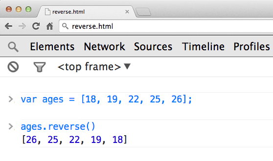
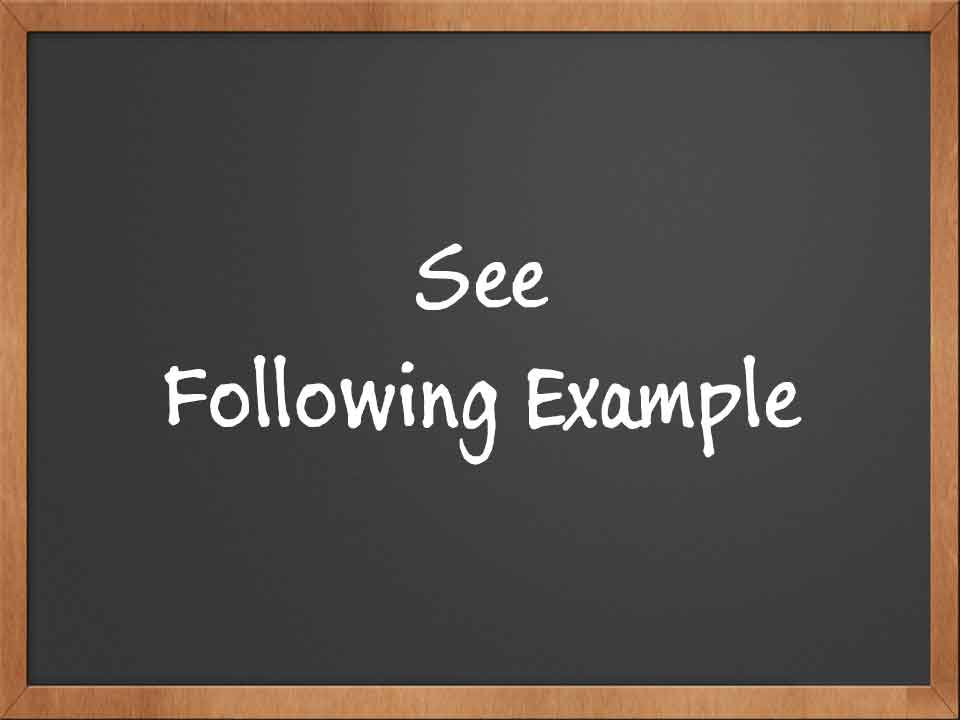
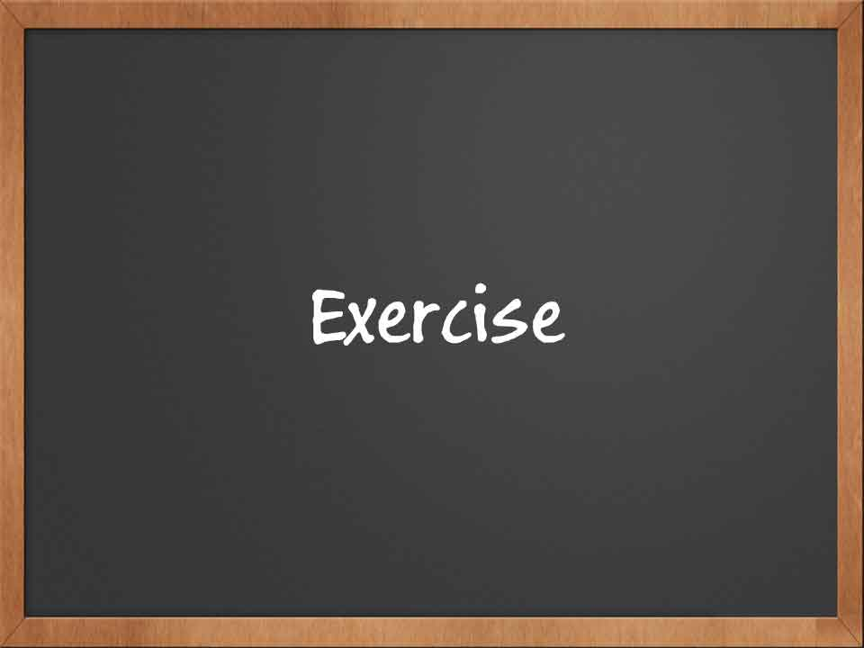
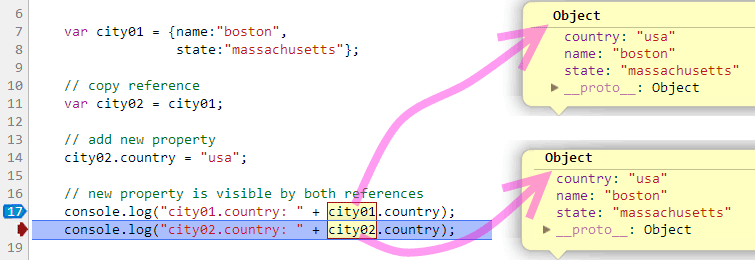

Functions

Agenda
- Why do we care?
- Functions Basics
- Functions are objects
- Functions Provide Scope
- Value and Reference
- Exercises
Why do we care?
- We want to bring together data and functionaly into units that make sense to us.
- We want to want minimize complexity by creating layers of abstraction and hiding the details.
- We want to organize and share our work.
- Using objects and functions we can also extend the language. We can create our own types and methods.
How does reverse work?
Do we care?
Functions Basics
Components of a Function
A function is composed of four parts:
- The keyword
function - The function name
- The function parameters
- The function body
Function Expression
There are two types of functions:
- Expressions
- Statements
Function Statement
A function statement is short-hand for a function expression
Expression vs Statement - Simple Rule
If the first token is function, you have a function statement
Your Turn ...
Video: Function Basics
Functions are objects
Functions Are Objects I
Functions are collections of name/value pairs. Just like objects, functions can be:
- Assigned to a variable
- Assigned to an object
- Passed as arguments to a function
- Returned from a function
- Can have methods and properties
- Can be created dynamically
Functions Are Objects II
Assigning a function to a variable.
Your Turn ...
Your Turn ...
Video: Functions Are Objects
Functions Provide Scope
Functions Provide Scope
Any variable declaration with a var inside the function is invisible outside the function.
Scope within a Function
NOTE: child functions have access to parent functions variables and parameters
Example
Your Turn ...
In the following exercise, your task is to output two different messages by adding one keyword.
Your Turn ...
Video: Functions Provide Scope
Value and Reference
Video: Value and reference
Primitive Value Types
Passing Primitive to Function
Function calls also pass primitive types by value.
Your Turn ...
Objects are Passed by Reference
Objects are never copied.
Object Inspection
Objects are never copied.
Your Turn ...
Within the Object
Primitive and object behavior holds.
Keeping the Object Reference
You can keep an object reference even while you reassign the variable - example below